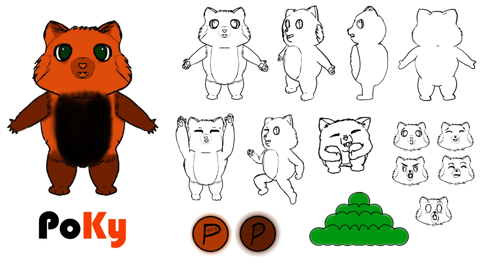
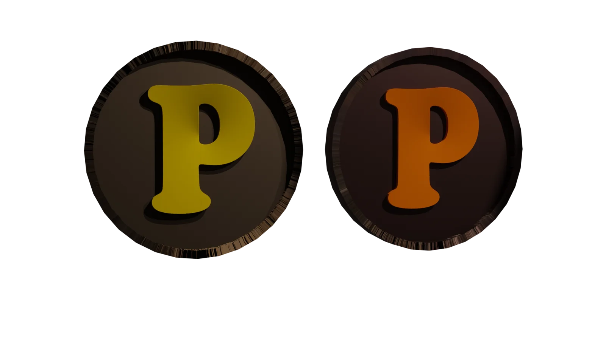
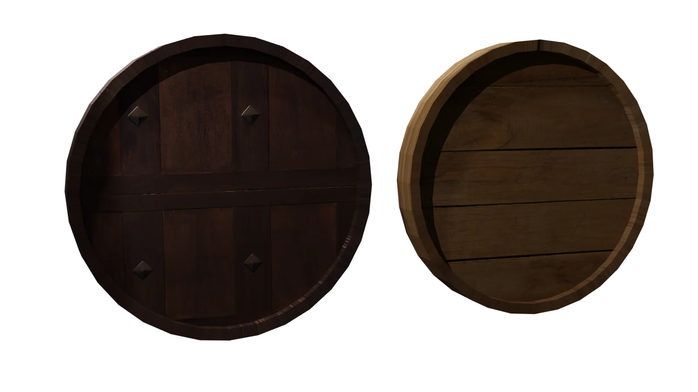

← Todos los proyectos
Preproducción · Diseño de personajes
Videojuego POKI
Desarrollo visual de un videojuego: personaje, escenario y objetos que construyen un mismo universo.

SOBRE EL PROYECTO
Un universo visual antes de comenzar a jugar.
La propuesta reúne una hoja de diseño del personaje Poky, una vista del escenario y diseños de objetos. Este material de preproducción define las formas y los recursos visuales del videojuego; no se presenta como una versión jugable.
Piezas y proceso
PERSONAJE Y ESCENARIO
Coherencia entre protagonista y mundo.
La hoja del personaje permite explorar sus vistas y expresiones. El escenario aporta el contexto, mientras que los objetos complementan el lenguaje gráfico de la propuesta.
GALERÍA
Diseño del personaje y escenario

GALERÍA
Objetos y sus vistas

